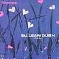

Celtic Lyrics Corner > Artists & Groups > Tannas > Suilean Dubh > Air A' Ghille Tha Mo Rùn
|  | Air A' Ghille Tha Mo Rùn |
| Credits : | Traditional; arranged by Tannas |
| Appears On : | Suilean Dubh |
| Language : | Gàidhlig (Scottish Gaelic) |
| Lyrics : | English Translation : |
| Sèist : | Chorus (after each verse) : |
| Air a' ghille tha mo rùn | My desire is for the lad |
| Tha mo rùn air a' ghille | He is the one I love |
| Bho'n a thug thu rium do chùl | Since you turned away from me |
| B'e mo dhùrachd thu thilleadh | My dearest wish is that you would return |
| Falt do chinn tha dualach dlùth | Your hair is in tight tresses |
| T' anail chùbhraidh, ro-mhilis | Your breath fragrant and sweet |
| Da shùil mheallach, chorrach, chiùin | Your eyes alluring, passionate and calm |
| 'S tu mo rùn de na gillean | You are the choicest of all the young men |
| Tha thu ro mhath air an t-sliabh | You are the most expert on the moor |
| Thoirt nan eun bhàrr na h-iteag | At shooting the birds on the wing |
| Gunna dubh a leagadh fiadh | With a black gun that would down a stag |
| 'S earbag riabhach an fhirich | Or a young roe on the moorland |
| 'S ann am Muile nam beann fuar | It is in Mull of the cool bens |
| Tha mo luaidh de na gillean | That my sweetheart lives |
| Dh' aithnichinn thu 'measg an t-sluaigh | I would recognize you amid the throng |
| Leis na h-uaislean a' tighinn | As you walked with the nobility |
| Air a' ghille tha mo rùn... | My desire is for the lad... |